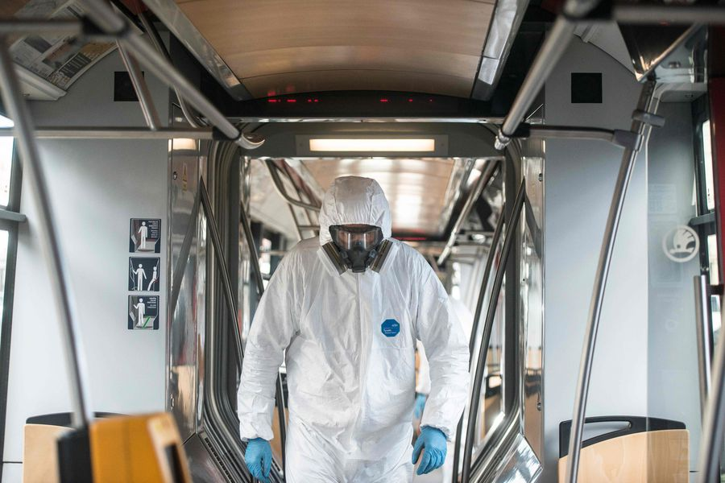

En busca del misterioso paciente cero: China habría identificado primer caso de coronavirus

Wuhan, es la ciudad china epicentro del nuevo coronavirus, que a la fecha ha infectado a más de 120 mil personas en el mundo.Es también el lugar en que los científicos buscan descubrir el patrón de transmisión inicial de covid-19.Con esa información se podría entender no solo su origen, sino también qué medidas de prevención son necesarias.
Pero el llamado 'paciente cero', nombre que describe al primer humano infectado por una enfermedad viral o bacteriana en un brote; en dos meses desde que se iniciara covid-19, no ha sido identificado.Conocer quién es esa persona puede ayudar a abordar preguntas cruciales sobre cómo, cuándo y por qué comenzó la enfermedad.
De acuerdo con la Organización Mundial de la Salud (OMS), el primer caso confirmado de Covid-19 en China fue el 8 de diciembre.Pero esa información corresponde a la que cada país informa.
Sin embargo, un estudio, realizado por investigadores chinos publicado en la revista médica
The Lancet , afirmó que la primera persona en ser diagnosticada con covid-19 fue el 1 de diciembre de 2019, y que esa persona 'no tuvo contacto' con el mercado mayorista de Huanan Seafood.
Ahora, un medio de comunicación en China,
South China Morning Post, dio a conocer que
s egún datos del gobierno recopilados por ellos, la primera persona que habría presentado la enfermedad es un hombre de 55 años de la provincia de Hubei, el 17 de noviembre de 2019.
A partir de esa fecha, se informaron de uno a cinco casos nuevos cada día.Para el 15 de diciembre, el número total de infecciones era de 27 (el primer aumento diario de dos dígitos se informó el 17 de diciembre) y para el 20 de diciembre, el número total de casos confirmados había llegado a 60.
El 27 de diciembre, Zhang Jixian, médico del Hospital Provincial de Medicina Integrada China y Occidental de Hubei, dijo a las autoridades sanitarias de China que la enfermedad fue causada por un nuevo coronavirus.Para esa fecha, más de 180 personas habían sido infectadas, aunque los médicos podrían no haber sido conscientes de todas ellas en ese momento.
Para el último día de 2019, el número de casos confirmados había aumentado a 266, el primer día de 2020 se situó en 381.
Hasta el momento, las autoridades chinas han identificado al menos a 266 personas que se infectaron el año pasado, todas ellas bajo vigilancia médica en algún momento.
La comunidad médica de Wuhan recién a fines de diciembre del año pasado se dio cuenta que estaba lidiando con una nueva enfermedad.
Posted On: 2020-03-13T15:49:00
Posted By: Paulina Sepúlveda
Content Date: 2020-03-13
Download Date: 2021-04-21
Document ID: L0C04APHY